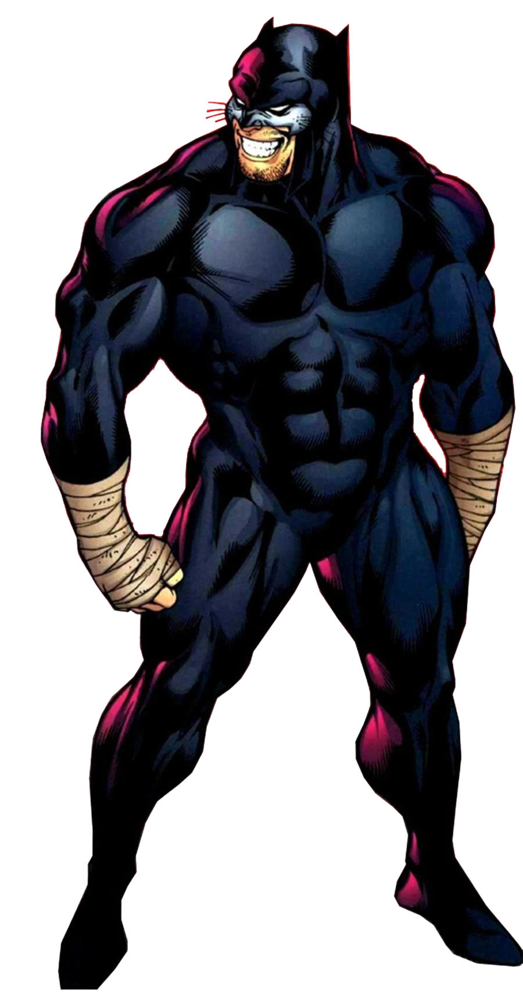

Criação do Wildcat
Wildcat é um personagem dos quadrinhos da DC Comics. Ele foi criado por Bill Finger
e Irwin Hasen, fazendo sua primeira aparição em Sensation Comics #1, lançado em 1942.
O Personagem Wildcat
Wildcat é o nome de Theodore "Ted" Grant, um lutador de boxe aposentado que se tornou
um
super-herói. Ele não possui habilidades sobre-humanas, mas é um combatente
altamente treinado e habilidoso.
Theodore Grant adotou a identidade de Wildcat para combater o crime e proteger os inocentes.
Ele é conhecido por sua força física e resistência impressionantes, bem como sua
experiência em combate corpo a corpo. Ele é um pugilista talentoso e
utiliza técnicas de boxe em suas lutas contra vilões.
Wildcat é um membro da Sociedade da Justiça da América (JSA), um grupo de super-heróis
da DC Comics. Ele desempenha um papel importante na equipe, trazendo sua
experiência em combate e sua determinação para enfrentar as ameaças que surgem.
Quadrinhos Importantes do Wildcat
Wildcat teve várias histórias importantes nos quadrinhos, explorando seu passado, seus relacionamentos e suas batalhas contra o crime. Aqui estão alguns dos quadrinhos mais relevantes do personagem:
"Wildcat Vol. 1" (1988):
Esta série em quadrinhos focou nas aventuras solos de Wildcat, mostrando suas lutas contra vilões e seu papel como protetor de sua cidade.
"Justice Society of America" (2006-2011):
Wildcat é um membro chave da Sociedade da Justiça da América nesta série, lutando ao lado de outros heróis para preservar a justiça e a paz.
"JSA: The Golden Age" (1993):
Esta minissérie apresenta uma visão alternativa do universo DC, com Wildcat e outros heróis enfrentando os desafios da Segunda Guerra Mundial.
Adaptações em Outras Mídias
Wildcat fez aparições em várias adaptações animadas e live-action, expandindo sua presença para além dos quadrinhos. Aqui estão algumas das mais notáveis:
Série de TV "Smallville" (2001-2011):
Wildcat aparece em alguns episódios da série, interpretado por atores como Roger Cross e Tahmoh Penikett.
Animação "Batman: The Brave and the Bold" (2008-2011):
Wildcat é um personagem recorrente nesta série animada, onde ele se junta a Batman em várias aventuras.
Habilidades do Wildcat
Wildcat é um lutador de boxe altamente habilidoso e experiente, o que o torna um oponente formidável mesmo para adversários superpoderosos. Aqui estão algumas de suas principais habilidades:
Combate Corpo a Corpo:
Wildcat é um mestre em várias técnicas de luta, incluindo boxe, muay thai e artes marciais mistas. Ele usa sua agilidade, força e velocidade para enfrentar seus oponentes de forma eficaz.
Força e Resistência:
Sua extensa experiência no boxe e seu treinamento físico rigoroso lhe conferem força sobre-humana e resistência excepcional.
Determinação:
Wildcat é conhecido por sua determinação implacável e sua recusa em desistir, mesmo diante das adversidades mais difíceis.
Conclusão
Wildcat é um personagem icônico da DC Comics, conhecido por sua habilidade no boxe e seu papel como membro da Sociedade da Justiça da América. Como um lutador experiente, ele traz sua coragem, força e determinação para a luta contra o crime. Ao longo dos anos, suas histórias nos quadrinhos exploraram sua jornada como herói, suas interações com outros personagens e sua luta contínua pela justiça. Wildcat também teve aparições em diferentes adaptações, ampliando seu alcance para além das páginas dos quadrinhos. Com suas habilidades de combate corpo a corpo e sua personalidade destemida, Wildcat continua a ser uma figura amada pelos fãs e um símbolo de coragem no universo da DC Comics.